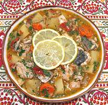

|
Gray Mullet with VegetablesBulgaria - Kefal S Cartofy I Morkovy | ||||
| Serves: Effort: Sched: DoAhead: |
5 main *** 2 hrs Yes |
A nice flavorful fish stew with plenty of chunky vegetables. It is an excellent match for Gray Mullet, a medium flavored fish highly thought of worldwide, but would also work with lighter flavored fish. | |||
|
3-1/4 11 8 ------ 1 5 1-1/2 ------ 1/4 3/4 1 1-1/2 ------ 1/2 |
# oz cl --- # oz # --- c c t T --- c |
Mullet (1) Onions Garlic -- Vegetables Tomatoes Carrots Potatoes (2) ---------- Olive Oil Water Salt Lemon Juice -- Garnish Parsley Lemon Slices |
Prep - (45 min + prepare Fish)
|